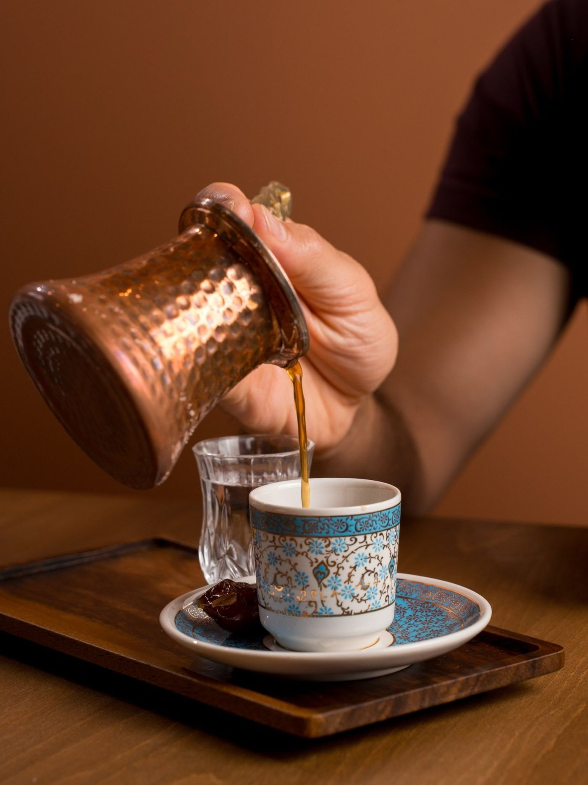
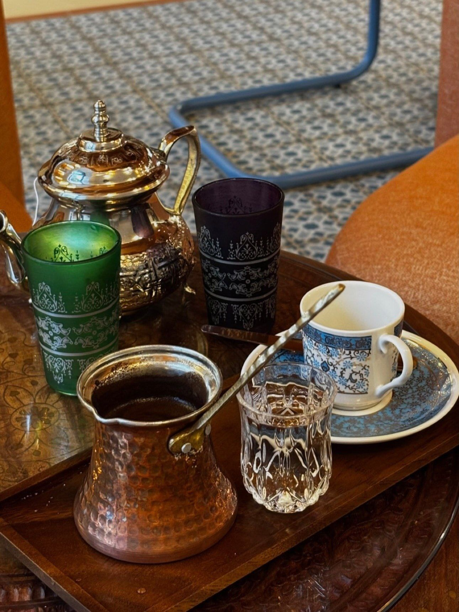
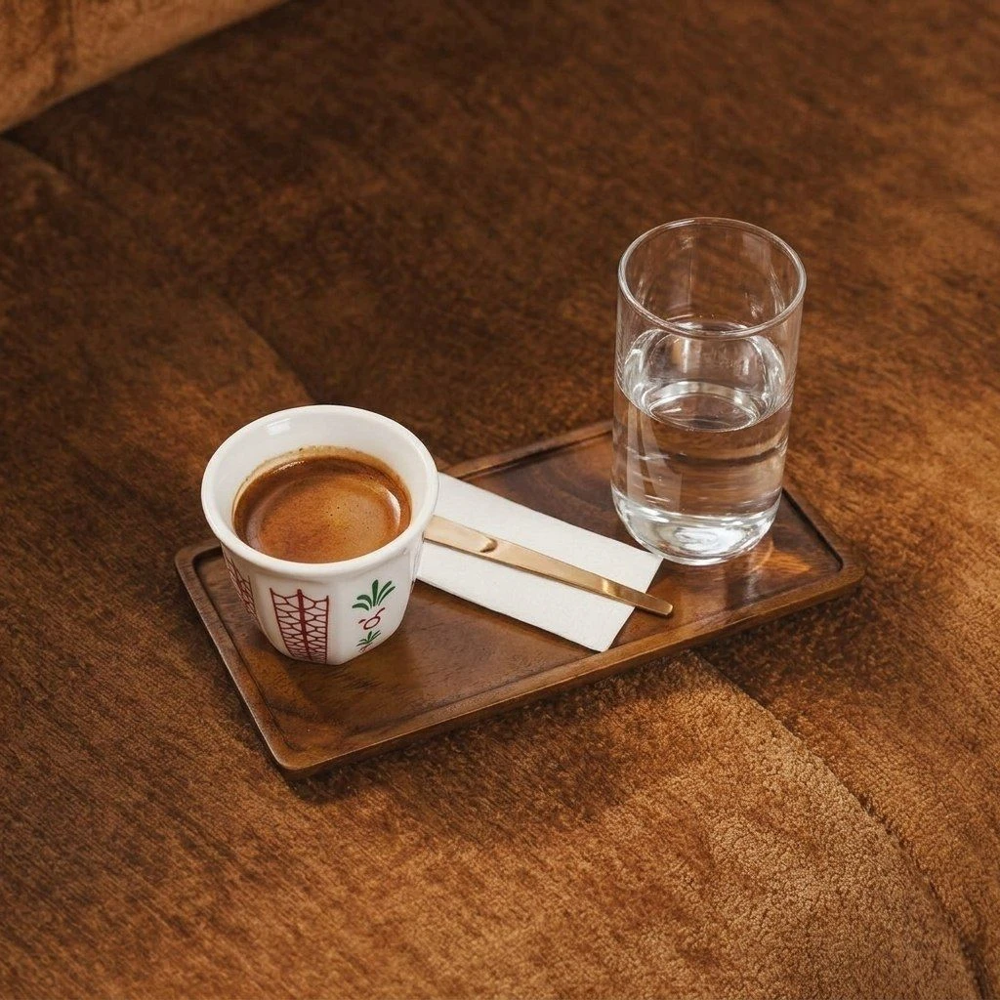
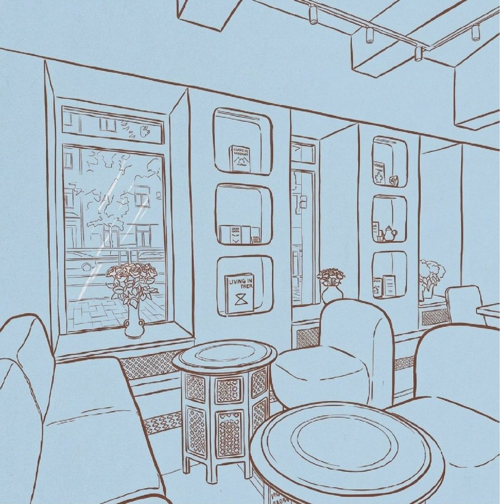
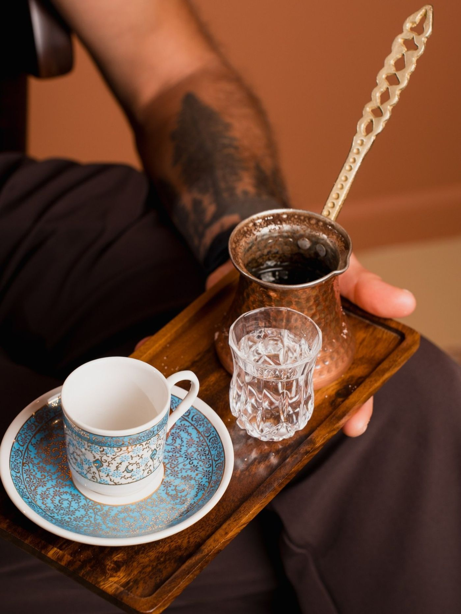
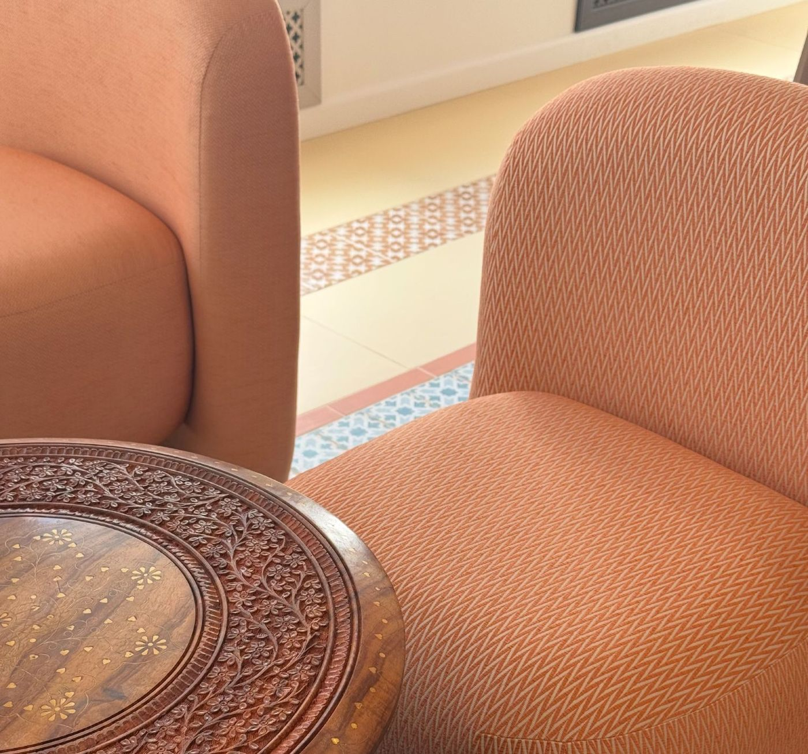
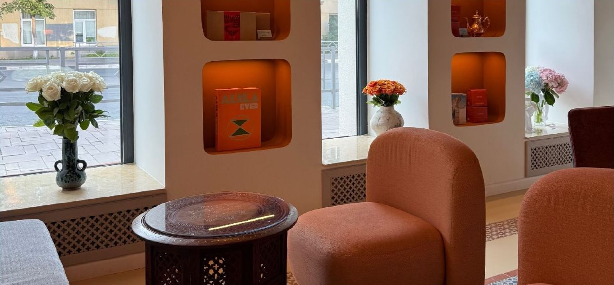

«Бейт» по-арабски значит «дом». Кофейня, вдохновлённая арабской культурой: кофе в турке, авторские напитки и маджлис с низкими креслами.

- Адрес
- Самара, Галактионовская, 167
- Часы
- Ежедневно 09:00–22:00
Бейт — значит дом

О кофейне
Бейт открыли в центре Самары в августе 2026 года. Интерьер собран из вещей разных стран: марокканские столики, индийское зеркало, французская посуда, винтажная мебель, работы российских дизайнеров и живые цветы.
В зале две зоны. В европейской — высокие столы. В восточной — маджлис: низкая посадка и мягкие кресла. Ещё есть отдельная комната для намаза, где можно переодеться или покормить ребёнка.
- Кофе в турке по трём рецептам
- Летняя веранда
- Кофе с собой
«Здесь кофе не просто пьют: им встречают, угощают и начинают разговор»


Маджлис — место, где собираются
Название происходит от арабского jalasa — «сидеть». Маджлис — это комната для гостей. Здесь принимали друзей, вели долгие беседы, обсуждали новости, поэзию, торговлю и философию.
В Бейт мы бережно перенесли эту традицию в современное пространство: низкая посадка, марокканские столики и кресла, чтобы собраться за дружеской беседой, замедлиться и выпить чашечку кофе.
В 2015 году традиция маджлиса включена в список нематериального культурного наследия ЮНЕСКО.

Кофе в турке
Варим в медной турке и подаём со стаканом воды.
- 350 ₽
Турецкий
кардамон, шафран
- 350 ₽
Марокканский
чёрный перец
- 380 ₽
Гранатовый
гранатовый сок
Галерея


Как нас найти
- Адрес
- Самара, Галактионовская, 167
- Часы
- Ежедневно 09:00–22:00
- Телефон
- +7 939 711-90-99